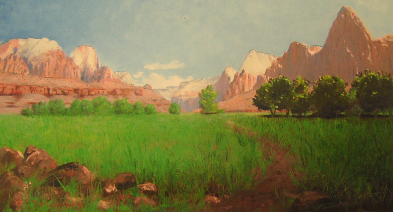
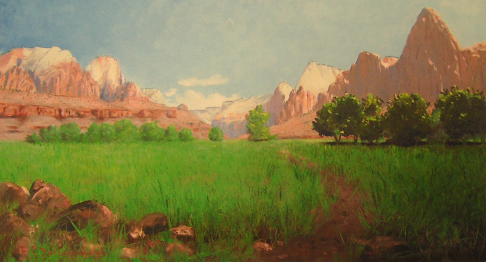

Situated near Springdale in southwestern Utah, Zion National Park is one of America's most popular national parks. This remarkable park might very well be called Mukuntuweap National Park today were it not for unhappy Mormons and a faithful sidekick standing in for an iconic National Park Director who suffered terrible bouts of depression. It's a fascinating story.
In the early 1850s, Mormon pioneers dispatched from Salt Lake City by the Church of Jesus Christ of Latter Day Saints leadership became the first white settlers of the Virgin River region in southwestern Utah. In 1851 they settled in the Cedar City area and began growing cotton and other crops. (Historians know this as the “cotton campaign,” and the early Mormon cotton growing region of the southern Utah plateaus is known as “Mormon Dixie.”) By 1858, the Mormon-settled area had pushed 75 miles up the Virgin River corridor into the immediate vicinity of Zion Canyon. At this time, these remote canyonlands were wild and barely explored.
The remarkable physical feature we now call Zion Canyon is located on the southern part of the Markagunt Plateau where it is deeply dissected by the Virgin River and its tributaries. Erosion has left deep canyons (slot-like in many places), soaring cliffs, and huge monoliths. Though strikingly beautiful, this was a harsh environment. And it belonged to the Southern Paiute Indians.
Before a settlement toehold could be established, the Mormons first had to know what sort of a place it was and whether it could be farmed. This exploration task was assigned to a young Mormon missionary and translator named Nephi Johnson. Enlisting the aid of a Southern Pauite guide, Johnson made his way into the main canyon in 1858. Upon his return, he rendered a favorable report on the agricultural potential of the canyon floor.
In 1861, Mormon pioneer Joseph Black became the first white to establish a farm on the narrow canyon floor. By 1862, several farming families had founded the town of Springdale just outside the mouth of Zion Canyon. In 1863, a Mormon settler named Isaac Behunin built a one-room log cabin (near the site of Zion Lodge) and farmed tobacco, sugar cane, and fruit trees. It was Behunin who named the place Zion Canyon.
Zion is a biblical word meaning a place of peace and refuge or sanctuary. It is an exceedingly important word to Mormons because it symbolizes a concept to their history, or more specifically, to their heritage as refugees and pioneers in the western U.S. Persecuted in the eastern states, the early Mormons fled to the Great Basin and the Rocky Mountains beginning on the late 1840s. The Mormon pioneers who struggled to establish an essentially independent Mormon realm (Deseret) are said to have “gathered to Zion.” Eventually, the term Zion itself took on meaning as a symbol of Mormonism, embracing such qualities as courage, dedication to the cause, physical endurance, resoluteness, ingenuity, and faith.
-Taken from "Park History: Zion National Park" , NationalParksTraveler.org, 2003-2024.
 
